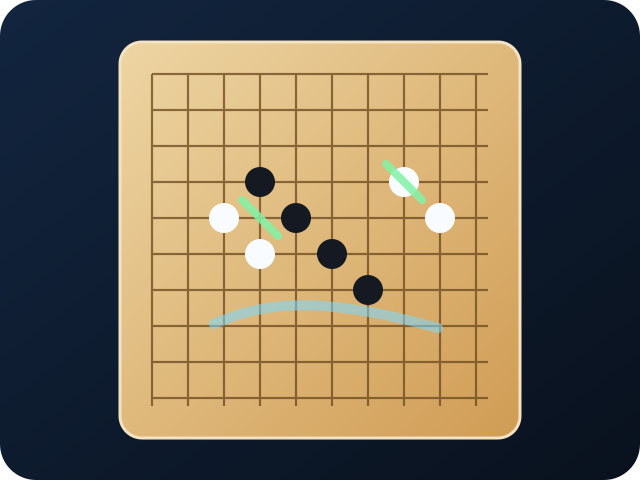

六子棋主线页面只处理最�?AI 本体，不�?NNUE 或结论页混写�?/p>

ConnectSix_20250505
ConnectSix2024
首页把这一页定义为最强六子棋 AI 的主入口�?/p>
最近年份训练过的主线一般会在分支的 scripts/ 目录放配置和训练脚本，六子棋主线建议优先查看 ConnectSix2024/scripts�?/p>
scripts/
ConnectSix2024/scripts
模型强度和“疑似黑胜”的结论不是一回事，所以结论单独拆到另一页�?/p>